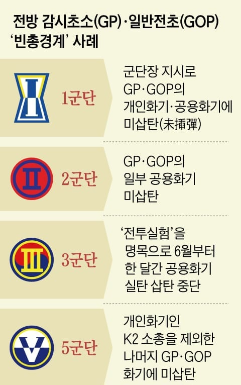

민족반역자 김정은이 따로 살림하자고 한 뒤부터
육군 4개 군단과 해병 1개 사단이
모두 빈총경계를 했다고 한다

민족반역자 김정은이 따로 살림하자고 한 뒤부터
육군 4개 군단과 해병 1개 사단이
모두 빈총경계를 했다고 한다
GOP미삽탄은 제정신인가...저 색기들 크레모아 전선도 뽑아놓는거 아니냐
저 지랄 해놓고 공격하라고 무인기 띄우고 개지랄들을 떤거임? ㅋㅋㅋㅋㅋㅋ
별들 중에서 간첩 존나 많음 ㅋㅋ
어허! 죽은 제갈량이 사마의를 이긴다.. 노오옾으신 별들의 큰뜻이지
이야 23년도에 대체 무슨일이 있었는 걸까 ㅎㅎ
왕이 떨어진날 ㅋㅋㅋ
그건 25년
계엄령 선포는 24년이란다
전방에서 빈총은 좀 위험한거 아니냐 안보 불감 심한데
2010년대에도 공포탄만 불출하지않았나
"휴전국가"
분명 어떤 총기 사고를 계기로 장전 상태로 두지 말라 했겠지
인구수가 줄어드니 도움, 배려도 경계부대 가야하고 탄 주자니 사고는 늘겠고 싶어서 그것도 미삽탄 이유라 생각이 들긴 하는데 그런식으로 하나둘 다 봐주면 전방 경계는 어케하나...
원하는 결과가 나올때까지 세금 징병 늘려서 메꿔야지
전방사단 형님들은 알껄 애들이 없어서 피로도 좆됨 저출산 문제를 해결못하니 사고 안터지게 저런 극단적 방법 쓰는거야 ai감시 자율화 하던가 여자 징집 하던가 해야함
4교대라고 알려주는데 가보니까 2교대더라
그냥 사람이 없데
이랏사이마세!
빈총으로 할거면 뭐하러 경계근무 하나싶다
고기방패
? 진해에서 있었는데 공포탄3 나머지 실탄 이었는데 전방이 미삽탄?
gop 근무했는데 똥별들이랑 간부들이 왜 저렇게 했는지 알꺼같긴 함.. 물론 저렇게 절대로 하면 안됨 지금이라도 잡아서 다행
그냥 미드오픈하지 왜
CCTV 설치비용 아끼려고 경계 세웠냐
북괴가 너무좋아 장년들 들어올 예정입니다
난 군대에서 가장 큰 축복중에 하나가 후방에서 군생활한거라고 생각함
휴가나와서 집 갈때 버스로 한시간, 훈련없음 짜잘하게 이런걸 떠나서 국가적 폐급 새끼들이랑 실탄 들고 마주할 일이 없는게 큰거 같음
군대는 최소한의 필터링도 없는곳이고 인생 밑바닥인 애들이 대부분인 곳인데 거기서 그런애들이랑 실탄 삽입하고 근무 들어가라고?
군생활 했던 군부대도 그나마 훈련소에서 거르고 면접보고 들어간 곳인데도 그 정돈데 다른 곳은 그냥 짐승새끼들이랑 산다는거잖아
이건 또 무슨 자의식 과잉? ㅋㅋㅋ
원래 돼지 눈에는 오직 돼지만 보인다고
평소에 저런 사람들하고만 어울리나봐
나 포천 5군단직할 자대배치 받았는데 생각보다 인서울선후임 많았음.
내 맞선임이 서울대였음 ㅋㅋㅋ주말마다 간부새끼가 선임불러서 지자식 영어 알려달라고 함
이거 내가 상병때인가 딱 바뀌었음 새 군단장와서는 삽탄 하지말고 탄통만 들고가라 하는데 어이없긴 하더라
그전에는 공포탄 5발짜리 삽탄하고 총알 장전된 탄창들 전투조끼에 넣고 다녔음
진짜 개가라 군대구나. 북한이 도발했으면 그냥 밀렸겠네?
저게 실탄을 들고 있긴 했다는거지?
"더 위다"
지들이 맨날 화전양면전술 가르치면서 그걸 판단못해?
미친놈들
5군단은 그래도 개인소총엔 넣긴 했네
우리 15사단은 안뜨네
뭔가 말하고 싶어서 근질근질 하신분들 많네
안보에 좌우가 어딨음
좌: ㅋㅋ 뭐래노
우: ㅋㅋ안보수지~
????: 어리둥절?? 우리랑 뭔 상관임?
북한 도발 해서 쳐들어오면 문열어주라는
높으신분의 계획 이었고
총기사고 나면 난리나니까 그냥 아예 총알 없이 저지랄 하는거 아님?
총알 없어지거나 등등
해2사는 수도군단 통제라 따라갈수밖에없음
전쟁나면 대항군 훈련처럼 입으로 탕탕탕 ㅇㅈㄹ 하면서 싸우면 되는 거임?
그냥 문 열어
약간 강철의 연금술사같네
총기사고 나니까
꼬우면 내가 책임지겠다! 라고 솔선수범하게 나서면 됨
K6나 k4 장전 하려면 최소 20초는 걸릴텐데 기습 당하면 장전 끝나기 전에 초소 완파 당하겠네
즉강끝이니 뭐니 개지랄하면서 전방에서는 실탄 빼고 있던거냐 ㅅㅂ ㅋㅋㅋ